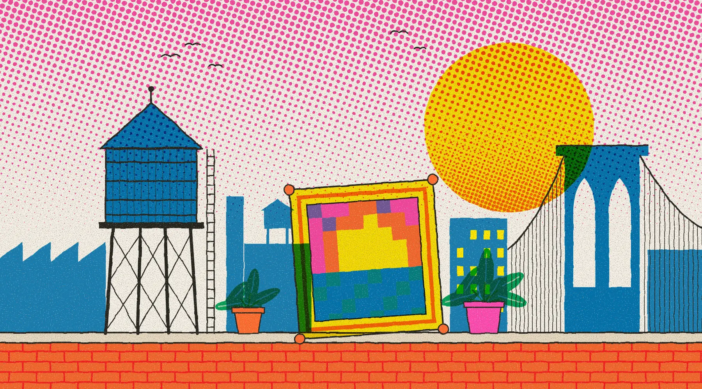

Art law · Technology law예술법 · 기술법
Where law, art, and technology intersect.법과 예술, 기술이 만나는 곳.
In Common is an arts, law and technology center based in New York and Seoul. We research art law and technology law, and share the work through articles, conversations and a monthly salon.
In Common은 뉴욕과 서울에 기반을 둔 예술·법·기술 센터입니다. 예술법과 기술법을 연구하고, 그 결과를 글과 대담, 월간 살롱을 통해 공유합니다.
About the center센터 소개